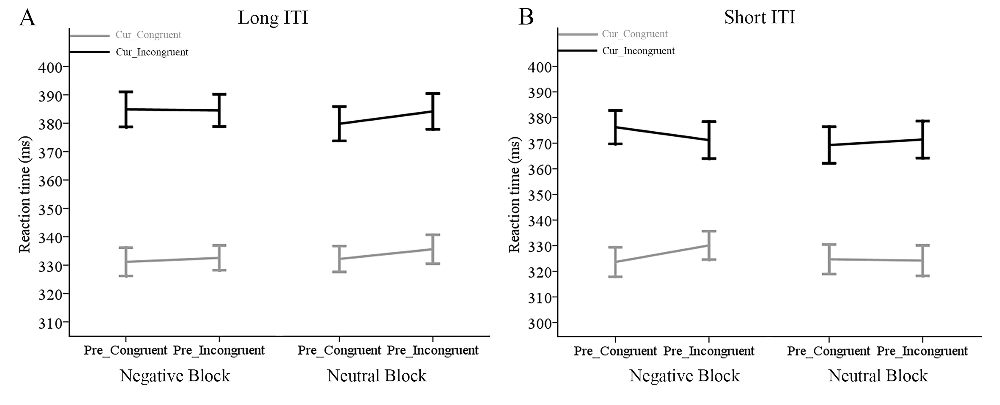
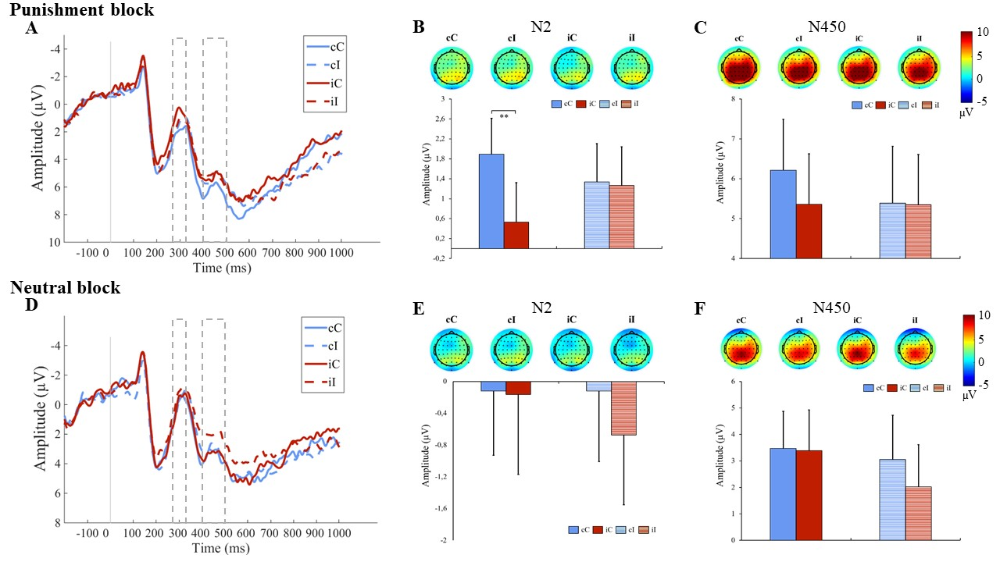
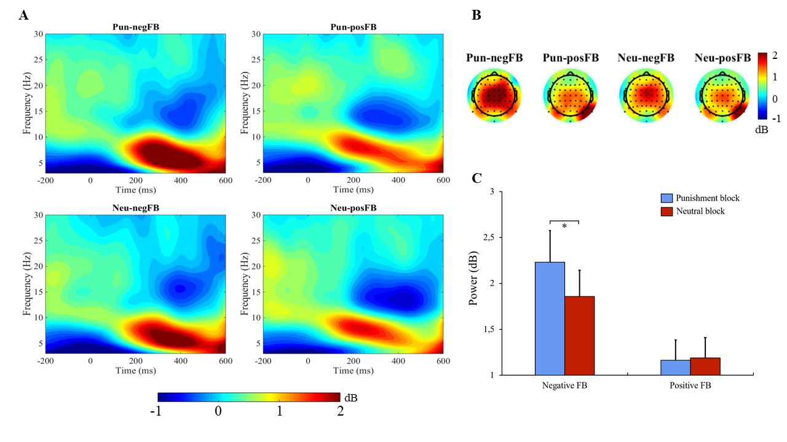
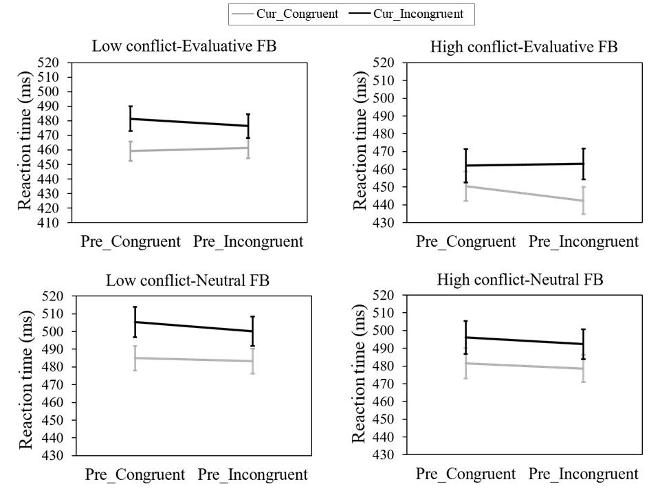
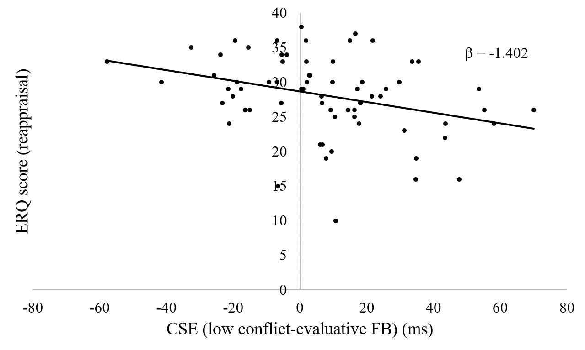

- Home
- Projects
- Publications
- Contact
Projects
How negative emotion improves conflict-driven adaptive control The involvement of reactive vs. proactive control in the congruency sequence effect Down-regulating of negative emotion via reappraisal reduces conflict adaptation
Negative emotion enhances cognitive control, and more specifically conflict adaptation. In this project, I assessed the actual time-scale of facilitatory effect of integral negative emotion, defined by monetary loss-related feedback contingent on task performance, on conflict adaptation. Further, I utilized electroencephalography (EEG) technique to address at which stage during stimulus processing this facilitatory effect takes place, and what his electrophysiological manifestation may be.
  Latest publication:
Yang, Q., & Pourtois, G. (under review). Negative emotion increases conflict adaptation through local changes in cognitive control: evidence from ERPs and mid-frontal theta.
Yang, Q., & Pourtois, G. (2018). Conflict-driven adaptive control is enhanced by integral negative emotion on a short time scale. Cognition and Emotion, 32(8), 1637-1653.
The congruency sequence effect (CSE) reflected by the influence of the congruency of the previous trial on the current one translates improved cognitive control. In this project, I adopted two different ways (changing proportion of conflict trials vs. providing different cues) manipulating reactive and proactive control to investigate their respective influences, and to compare whether the difference exists due to different manipulations.
 Latest publication:
Yang, Q., Notebaert, W., & Pourtois, G. (2019). Reappraising cognitive control: normal reactive adjustments following conflict processing are abolished by proactive emotion regulation. Psychological Research, 83(1), 1-12.
Negative emotion enhances conflict adaptation, and correspondingly, the regulation of negative emotion could in principle decrease it. In this project, I investigate whether reappraisal, known as an adaptive emotion regulation strategy, could lower conflict adaptation or not.